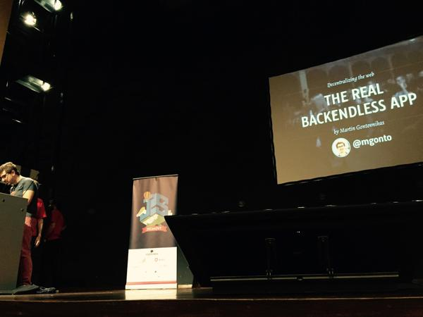
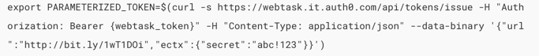
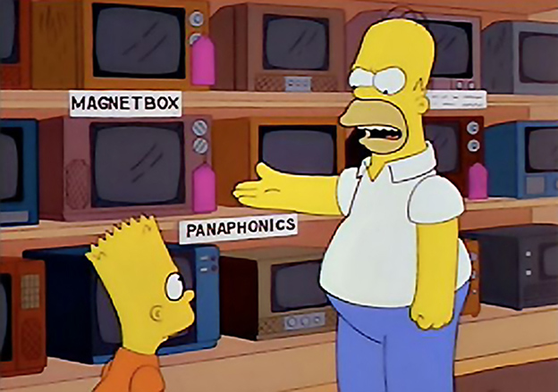
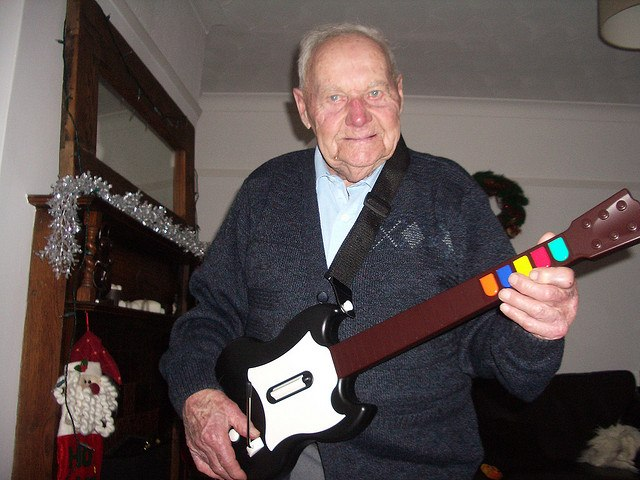
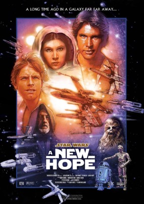
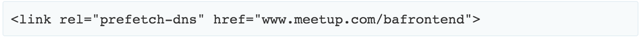
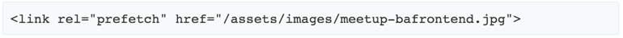
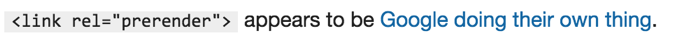
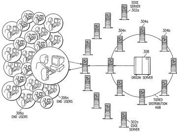

So, The Front Is the New Back :)
Lucas Rudi


frontend developer
[backend] developer
Once upon a time ...
YEAH
Sure?
https://webtask.io/docs/issue_parameters
the dark side of the moon
When the backend was rendering UI
How we mature
Doing the right things right
Prefetching
https://developer.mozilla.org/en-US/docs/Web/HTTP/Link_prefetching_FAQ
Preloading
http://butdoesitfloat.com/Prerendering
Socket offline
Content versioned
Security
XSS and CSRF
refreshing tokens
about the format of the presentation
more documentation
https://github.com/lucasrudi/frontend-talk